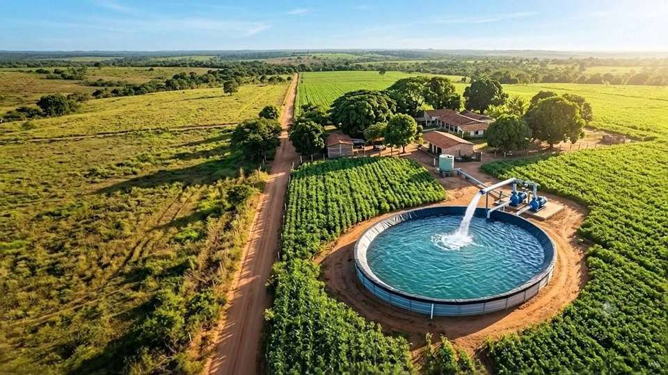
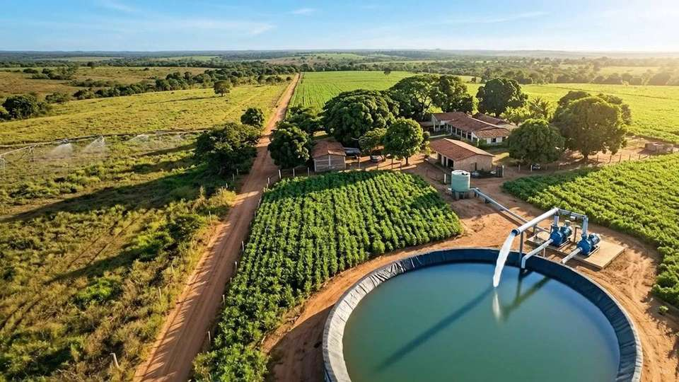
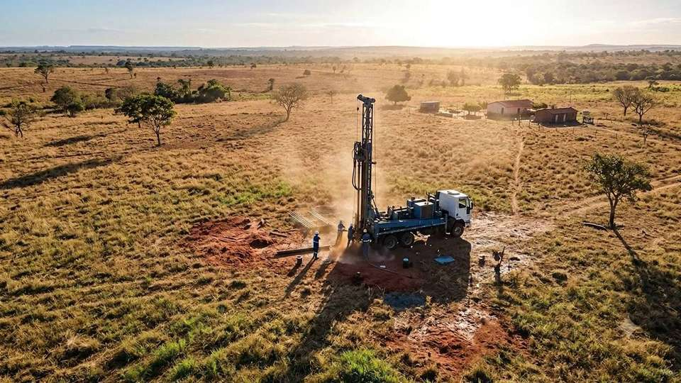

Sem água estável, sua lavoura perde força, seu rebanho sofre e sua fazenda para. Racionamentos e custos altos com caminhões-pipa são problemas do passado.
Entenda Como Mudar IssoNossas perfuratrizes rotativas ultrapassam as rochas mais difíceis. Engenharia avançada para encontrar as reservas subterrâneas mais puras e abundantes.
Conheça Nosso MétodoSua propriedade abastecida o ano inteiro. Fortaleça a pecuária, multiplique a produtividade da sua lavoura e atinja autonomia total com a HidroForte.
Orçamento via WhatsAppGaranta segurança e controle total sobre seu recurso mais valioso. Um poço artesiano profissional traz resultados reais desde o primeiro dia.
Esqueça a dependência de fornecimento municipal ou secas sazonais. Tenha água limpa disponível 24 horas por dia, 365 dias por ano.
Reduza a sua conta de água ou custos com transporte de água pipa em até 85%. O investimento se paga em poucos meses de operação.
Propriedades rurais, industriais e comerciais com poço artesiano homologado e ativo valorizam até 40% a mais no mercado imobiliário regional.
Mantenha seus sistemas de irrigação ativos ininterruptamente. Potencialize suas lavouras para colher safras maiores e mais nutritivas.
Garanta a hidratação e a engorda adequada de seus animais com água limpa e livre de contaminantes de superfícies externas.
Nosso processo segue rígidos padrões de engenharia e licenciamento para garantir durabilidade, legalidade e fluxo constante.
Mapeamos a geologia regional e estudamos o terreno em Chapadinha para selecionar o local com maior probabilidade de alta vazão e água de qualidade.
Nossa equipe entra com maquinário rotativo/pneumático robusto, perfurando as camadas rochosas sob rígidos controles técnicos de engenharia civil.
Inserimos tubulações geomecânicas e realizamos o isolamento sanitário com cimento para impedir infiltrações de águas superficiais poluídas.
Realizamos testes de bombeamento contínuo para quantificar a vazão por hora e enviamos amostras de água a laboratórios especializados para laudo físico-químico.
Montamos a bomba submersa, instalamos o painel elétrico de proteção e formalizamos a documentação necessária para o uso seguro e legal da água.
Atuamos com transparência e rigor operacional, garantindo vazões excepcionais nas propriedades de nossos parceiros.
Produtores rurais e empresários que transformaram seus empreendimentos com a segurança hídrica da HidroForte.
"Minha plantação de grãos sofria com as irregularidades das chuvas em Chapadinha. Com a instalação do poço, consegui planejar a irrigação e aumentei meu faturamento anual."
"Gastávamos muito dinheiro com carretas pipa para abastecer o confinamento de bois. A equipe fez a análise geofísica, encontrou água abundante e resolveu nosso problema."
"Excelente equipe. Cumpriram o cronograma à risca, organizaram a documentação e nos deram todas as orientações. A vazão superou a nossa expectativa."



Não dependa do clima ou de terceiros para o abastecimento da sua propriedade. Fale agora com a nossa equipe e receba um estudo prévio de viabilidade gratuito.